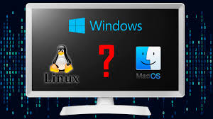

1. Introducción a los Sistemas Operativos
- ¿Qué es un sistema operativo?
- Importancia de los sistemas operativos.
- Vista general: Linux, MacOS y Windows.
- Importancia
- Navegación
- Impacto en el mundo digital

Los sistemas operativos son el corazón de cualquier dispositivo informático. Desde ordenadores y smartphones hasta servidores y dispositivos inteligentes, los sistemas operativos actúan como el puente entre el hardware y las aplicaciones, permitiendo que podamos interactuar con la tecnología de manera eficiente y sencilla.
Entre los más populares se encuentran Linux, conocido por su flexibilidad y comunidad de código abierto; MacOS, famoso por su diseño intuitivo y su estrecha integración con los productos de Apple; y Windows, líder en compatibilidad y preferido en entornos domésticos y empresariales.
A través de esta página, exploraremos a fondo las características, ventajas y desventajas de estos tres sistemas operativos, mostrando cómo cada uno ha influido y sigue moldeando el mundo digital. ¡Acompáñanos en este fascinante viaje por el mundo de los sistemas operativos!
 "
"
Un sistema operativo puede definirse como el software que actúa como intermediario entre los usuarios y el hardware de una computadora, gestionando los recursos y facilitando la ejecución de aplicaciones. Este concepto incluye funciones como la gestión de memoria, procesos, dispositivos de entrada y salida, y sistemas de archivos.
Docencia UPC. Procesos y servicios básicos en sistemas operativos. Barcelona: Universitat Politècnica de Catalunya, 2024.
Los sistemas operativos son esenciales porque permiten la interacción entre el usuario y el hardware de una computadora. Además, optimizan el uso de recursos como la memoria, el procesamiento y los dispositivos conectados, lo que garantiza el funcionamiento eficiente y seguro de las aplicaciones y tareas informáticas.
Los sistemas operativos actúan como una capa que facilita la interacción entre el hardware y el software, permitiendo que las aplicaciones funcionen en diferentes entornos. Cada sistema tiene su enfoque particular: Linux destaca por la personalización, MacOS por su diseño integrado, y Windows por su compatibilidad y soporte amplio.
En la interfaz de usuario, los sistemas operativos proporcionan elementos como escritorios, menús y accesos directos que simplifican la interacción del usuario. Herramientas como gestores de archivos y barras de tareas son comunes y esenciales en las experiencias de Linux, MacOS y Windows.
La evolución de los sistemas operativos ha transformado cómo interactuamos con la tecnología y ha permitido avances significativos en diversas áreas. Por ejemplo, Linux se ha convertido en el estándar para servidores y aplicaciones de nube gracias a su estabilidad y capacidad de adaptación. MacOS es preferido por profesionales creativos debido a su rendimiento en edición de video y diseño gráfico, mientras que Windows domina en la productividad empresarial y el gaming, ofreciendo una amplia gama de aplicaciones y soporte. Los sistemas operativos también han sido fundamentales para democratizar el acceso a la tecnología, con interfaces más intuitivas y opciones para diferentes presupuestos. Este impacto trasciende lo técnico, influenciando cómo aprendemos, trabajamos y nos conectamos en un mundo cada vez más digitalizado.
Open Access UOC. Sistemas operativos: definición y características. Barcelona: Universitat Oberta de Catalunya, 2024.